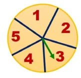
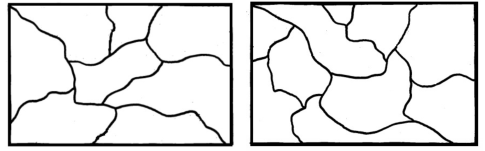

- You want to have an ice cream or a cake. There are three flavours (chocolate, strawberry and vanilla) in ice creams, and two flavours (orange and red velvet) in the cakes. In how many possible ways can you choose an ice cream or a cake?
- Shanthi has 5 chudithar sets and 4 frocks. In how many possible ways, can she wear either a chudithar or a frock ?
- In a Higher Secondary School, the following groups are available in XI standard

I. Science Group:
- Physics, Chemistry, Biology and Mathematics
- Physics, Chemistry, Mathematics and Computer Science
- Physics, Chemistry, Biology and Home Science
II. Arts Group:
- Accountancy, Commerce, Economics and Business Maths
- Accountancy, Commerce, Economics and Computer Science
- History, Geography, Economics and Commerce
III. Vocational Group:
- Biology, Nursing Theory, Nursing Practical I and Nursing Practical II
- Home Science, Textiles and Dress Designing Theory, Textiles and Dress Designing Practical I and Textiles and Dress Designing Practical II
In how many possible ways, can a student choose a group?
- If you have 2 school bags and 3 water bottles then, in how many different ways can you choose each one of them, while going to school ?
- Roll numbers are created with a letter followed by 3 digits in it, from the letters A, B, C, D and E and any 3 digits from 0 to 9. In how many possible ways can the roll numbers be generated? (except A000, B000, C000, D000 and E000)
- A safety locker in a jewel shop requires a 4 digit unique code. The code has the digits from 0 to 9. How many unique codes are possible ?
- An examination paper has 3 sections, each with five questions and students are instructed to answer one question from each section. In how many different ways of can the questions be answered?
- The given spinner is spun twice and the two numbers got are used to form a 2 digit number. How many different 2 digits numbers are possible?

- Ramya wants to paint a pattern in her living room wall with minimum budget. Help her to colour the pattern with 2 colours but make sure that no two adjacent boxes are the same colour. The pattern is shown in the picture.

- Colour the regions in the maps with few colours as possible but make sure that no two adjacent countries are of the same colour.

Objective Type Questions
- In a class there are 26 boys and 15 girls. The teacher wants to select a boy or a girl to represent a quiz competition. In how many ways can the teacher make this selection?
(A) 41 (B) 26 (C) 15 (D) 390
- How many outcomes can you get when you toss three coins once?
(A) 6 (B) 8 (C) 3 (D) 2
- In how many ways can you answer 3 multiple choice questions, with the choices A,B,C and D?
(A) 4 (B) 3 (C) 12 (D) 64
- How many 2 digit numbers contain the number 7 ?
(A) 10 (B) 18 (C) 19 (D) 20